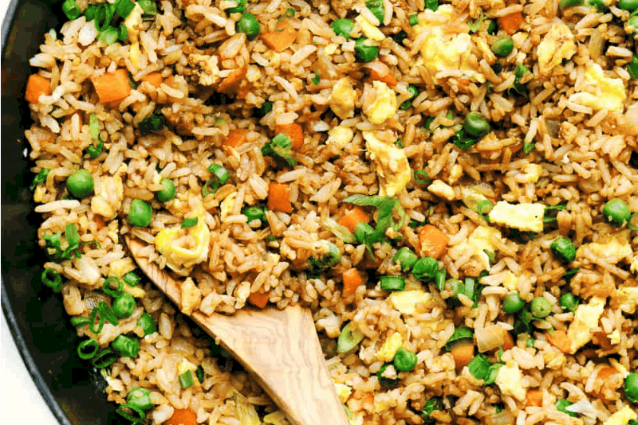

Chicken Stir Fry

Chicken stir fry is another easy, nutrient dense meal you can add to your
cooking arsenal. Just like shrimp pasta, it takes less than
20 minutes
to prepare, but it tastes delicious and can easily be saved for a later meal.
Stir fry is aslo easily customizable, you can add and remove vegetables as
you please as long as you have the all important
soy sauce
that gives this
dish its unique flavour you're ready to go.
Ingredients
- 2 Tablespoons cooking oil
- 1 pound chicken breast, boneless and skinless, cut in thin strips
- 2 large red or yellow bell peppers, sliced
- 1 large onion, sliced
- 2 cups bean sprouts
- 1 cup snow peas, cut in 1-inch pieces
- 2 Tablespoons water
- 2 Tablespoons soy sauce, low sodium
- 1 tsp fish sauce (optional)
- 2 pouches Ben's Original™ Ready Rice, Whole Grain Brown
- 2 Tablespoons sesame seeds
Steps
-
In a large nonstick skillet, heat oil over medium-high heat. Cook and
stir chicken, peppers and onion 4 to 5 minutes or until vegetables soften
and chicken is no longer pink.
-
Stir in bean sprouts and pea pods; cook 1 minute. Stir in water,
soy sauce and fish sauce.
-
Meanwhile heat rice as directed on package. Stir into chicken mixture,
heating about 2 minutes until thoroughly combined. Garnish with
sesame seeds.
Home page